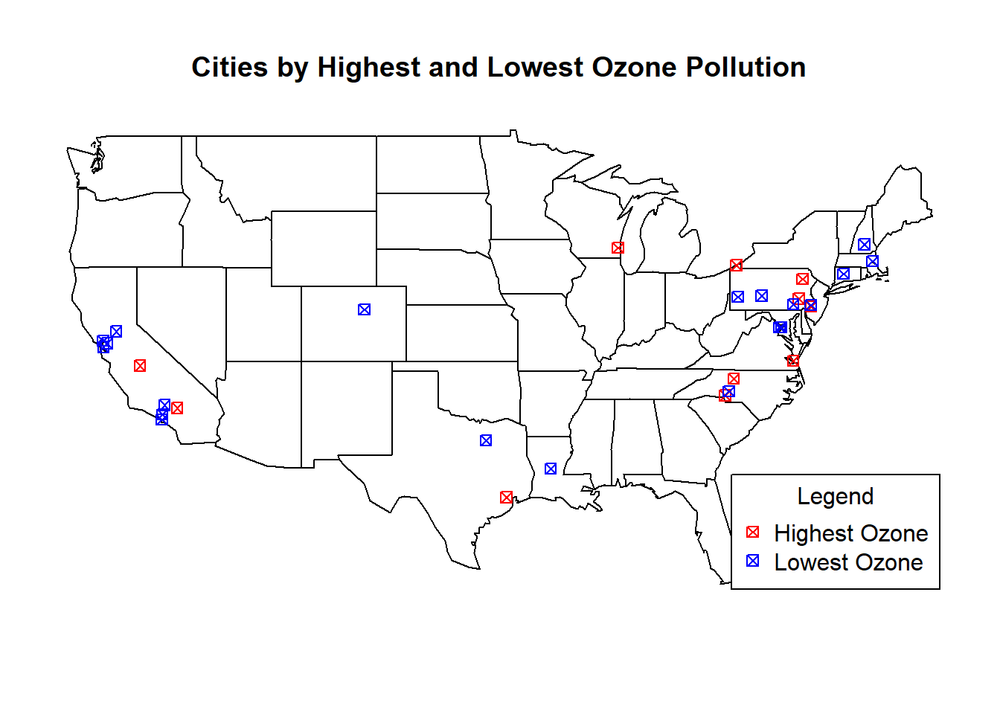
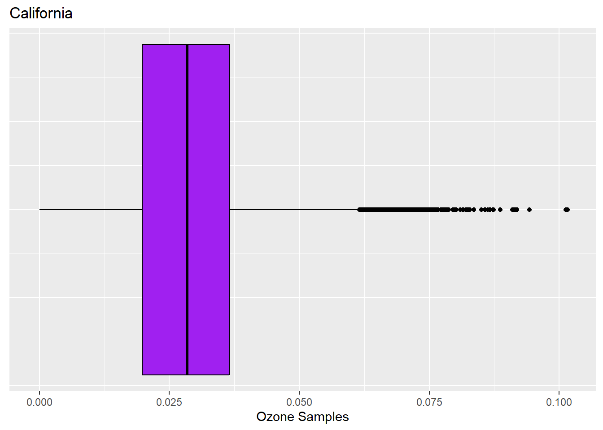
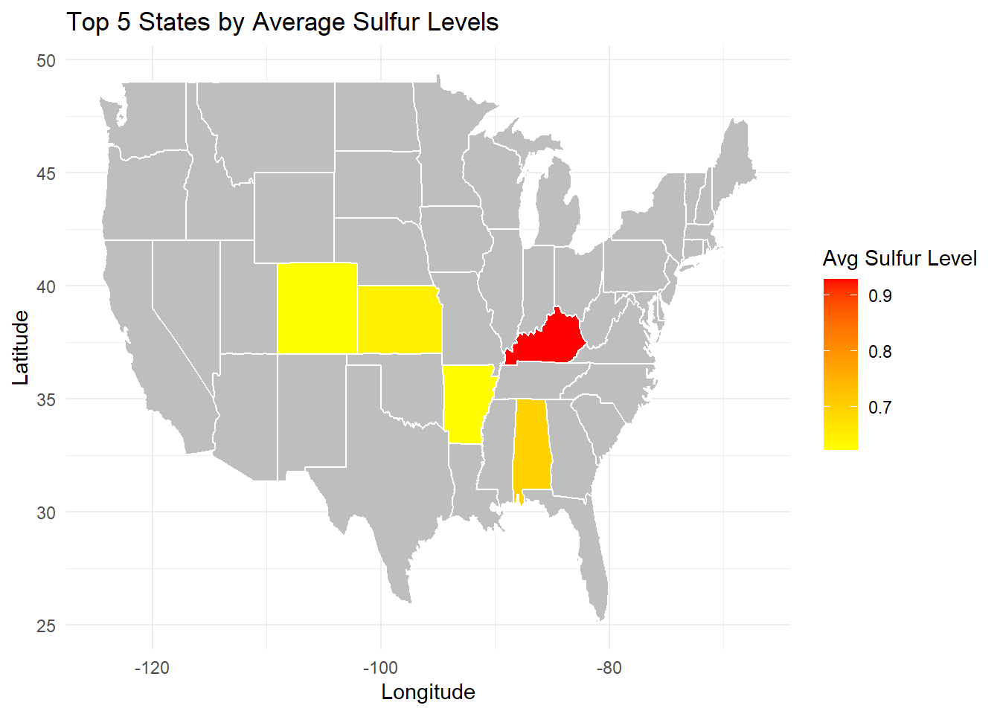
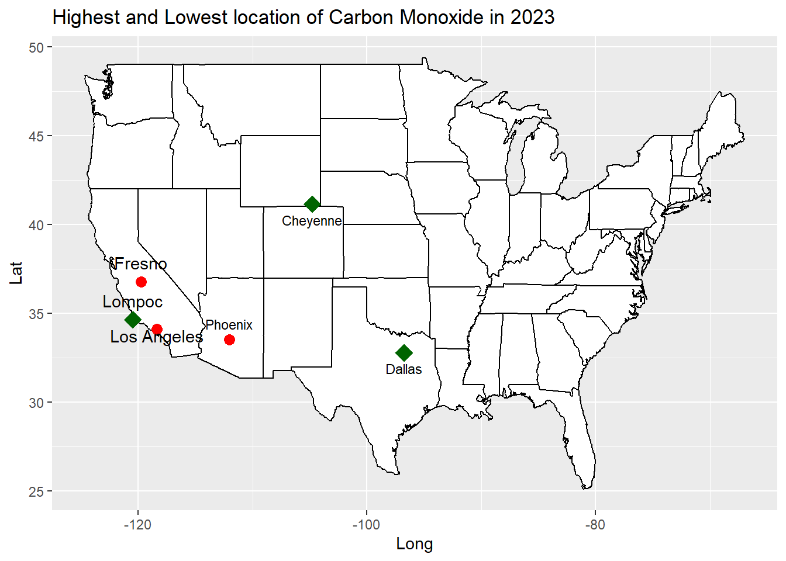
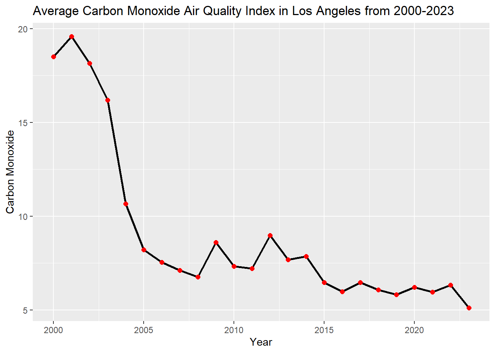
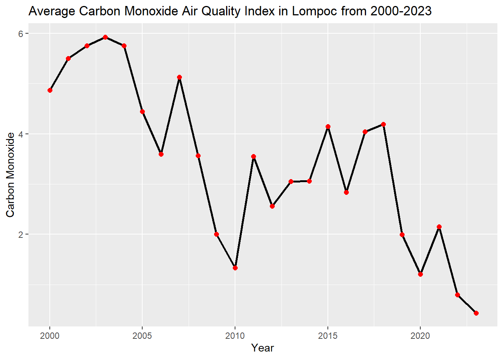
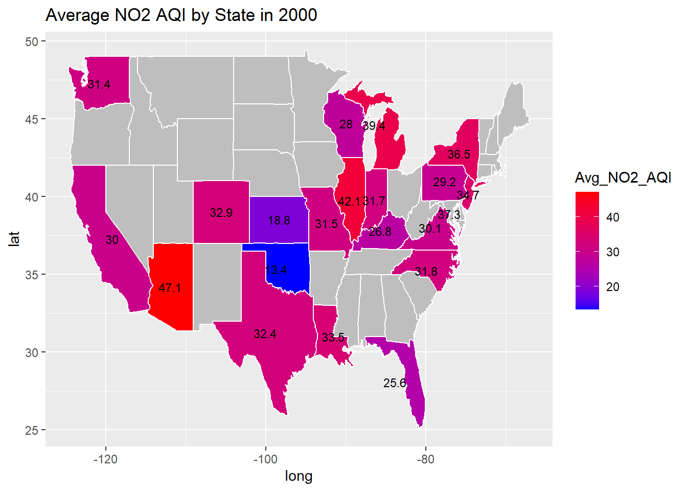
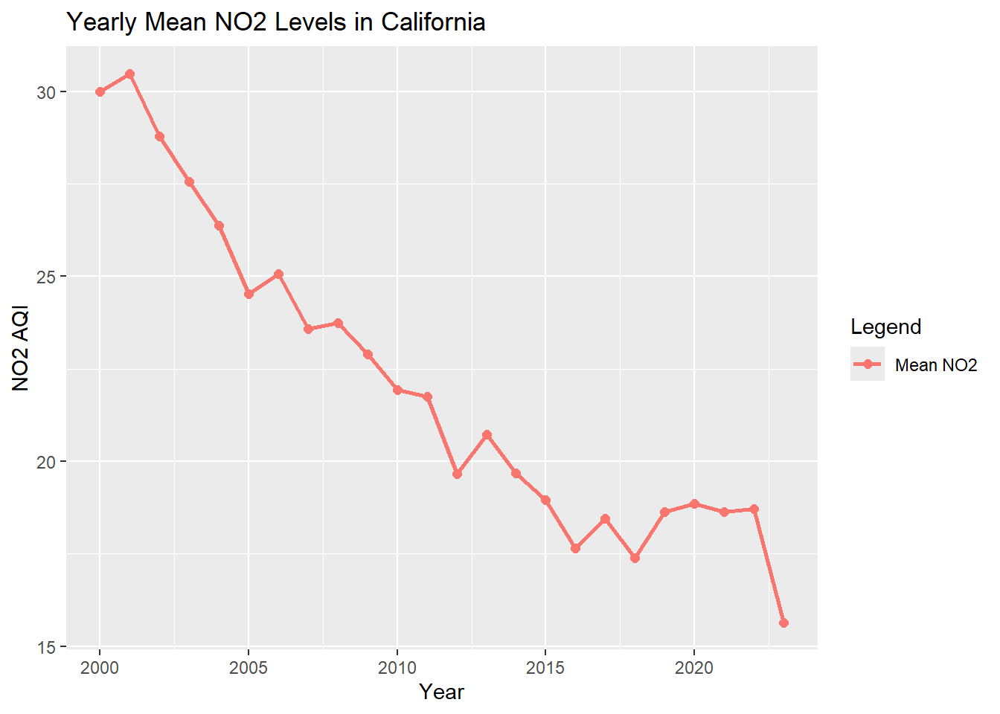

Ivan Avila, Lance Santana, Cole Hammes, Gustavo Perez
Published
December 11, 2024
Introduction
Air pollution significantly impacts public health and the environment, making it crucial to monitor trends in key pollutants such as ozone, carbon monoxide, sulfur dioxide, and nitrogen dioxide. Our project explores the question:
Which areas in the United States have shown the best and worst air quality trends for these pollutants, and how have they changed over time?
By analyzing historical data from 2000 - 2023, we aim to identify regional progress and challenges in air quality, providing insights into the effectiveness of environmental policies and the need for further action to combat pollution and understand how the situation has changed and where people can live to avoid it best.
library(tidyverse)
── Attaching core tidyverse packages ──────────────────────── tidyverse 2.0.0 ──
✔ dplyr 1.1.4 ✔ readr 2.1.5
✔ forcats 1.0.0 ✔ stringr 1.5.1
✔ ggplot2 3.5.1 ✔ tibble 3.2.1
✔ lubridate 1.9.3 ✔ tidyr 1.3.1
✔ purrr 1.0.2
── Conflicts ────────────────────────────────────────── tidyverse_conflicts() ──
✖ dplyr::filter() masks stats::filter()
✖ dplyr::lag() masks stats::lag()
ℹ Use the conflicted package (<http://conflicted.r-lib.org/>) to force all conflicts to become errors
library(maps)
Attaching package: 'maps'
The following object is masked from 'package:purrr':
map
New names:
Rows: 665414 Columns: 22
── Column specification
──────────────────────────────────────────────────────── Delimiter: "," chr
(4): Address, State, County, City dbl (17): ...1, O3 Mean, O3 1st Max Value, O3
1st Max Hour, O3 AQI, CO Mean... date (1): Date
ℹ Use `spec()` to retrieve the full column specification for this data. ℹ
Specify the column types or set `show_col_types = FALSE` to quiet this message.
• `` -> `...1`
Lance Santana’s Section
Reads and cleans pollution data set:
Analysis summary:
The initial analysis focused on extreme pollution conditions, particularly in California, due to its unexpected results, which contrasted with the high ozone levels typically expected near industrial hubs. This observation led to an investigation as to the potential effects of the quantity of ozone samples coming up as 0s.
Reads and cleans pollution data set:
#Removes negative values from datapollution_data <- airquality_data[airquality_data$`O3 Mean`>0,]
Question #1a/b: Which cities have the highest & lowest recorded ozone pollution levels?
Code
#Sorts highest & lowest 100 ozone samples into a data frametop_oz_samples <- pollution_data[order(pollution_data$`O3 Mean`, decreasing =TRUE),]top_oz_cities <- top_oz_samples[1:100, c("State", "City", "O3 Mean")]top_oz_cities
# A tibble: 100 × 3
State City `O3 Mean`
<chr> <chr> <dbl>
1 Pennsylvania Norristown 0.107
2 California Arden-Arcade 0.102
3 California Fresno 0.101
4 Pennsylvania Bristol 0.0968
5 Pennsylvania Norristown 0.0957
6 New York Holtsville 0.0946
7 New Jersey Camden 0.0944
8 California Victorville 0.0943
9 New York Holtsville 0.0936
10 Virginia Annandale 0.0926
# ℹ 90 more rows
# A tibble: 100 × 3
State City `O3 Mean`
<chr> <chr> <dbl>
1 Colorado Welby 0.000059
2 California Vallejo 0.000059
3 Arkansas North Little Rock 0.000059
4 Connecticut New Haven 0.000059
5 California San Jose 0.000083
6 Virginia Vinton 0.000111
7 California Not in a city 0.000118
8 New York New York 0.000118
9 New York New York 0.000118
10 North Carolina Charlotte 0.000118
# ℹ 90 more rows
Notably, data points surrounding San Francisco and Los Angeles were recorded among the lower than expected ozone levels.
Question #1c: Where are the highest and lowest recorded ozone levels in the United States?
Code
#Creates us.cities, needed for mapping, contains city coordinatorsdata("us.cities")us_cities <- us.citiesus_cities$name <-sapply(strsplit(us_cities$name," "), function(x) x[1])#Set variable with highest ozone city coordinatorsoz_cities_match_top_oz <- us_cities %>%filter(name %in% top_oz_cities$City)#Set variable with lowest ozone city coordinatorsoz_cities_match_bottom_oz <- us_cities %>%filter(name %in% bottom_oz_cities$City)#Maps cities maps ::map("state")points(oz_cities_match_top_oz$long, oz_cities_match_top_oz$lat, col ="red", pch =7)points(oz_cities_match_bottom_oz$long, oz_cities_match_bottom_oz$lat, col ="blue", pch =7)legend("bottomright", legend =c("Highest Ozone", "Lowest Ozone"), col =c("red", "blue"), pch =c(7, 7), title ="Legend")title(main ="Cities by Highest and Lowest Ozone Pollution")

A calculation of samples with zero ozone pollution in California’s data set revealed that almost 20% of all zero ozone samples were from California. While this suggests limited ozone pollution, potential errors in data collection may contribute to these results.
Question #1d: What are some potential issues with the data that may result in skewed statistics?
Code
#Potential Issues:# 1. us.cities does not have all the cities listed in our data set# 2. inaccurate sampling resulting in false 0 samples (evidenced by values less than 0)# 3. data emphasis on highly populated areas resulting in a higher frequency of false sampling#Counts the number of 0s in the data setzero_count <-sum(airquality_data$`O3 Mean`==0, na.rm =TRUE)cat("There are ", zero_count, "instances of a 0 value for ozone.\n")
There are 251 instances of a 0 value for ozone.
Code
#Counts the number of negative values in the data setneg_count <-sum(airquality_data$`O3 Mean`<0, na.rm =TRUE)cat("There are ", neg_count, "instances of a negative value for ozone.\n\n")
There are 2 instances of a negative value for ozone.
Code
#Counts the number of 0s or negatives in Cali datacali_count <-sum(airquality_data$State =="California"& airquality_data$`O3 Mean`<=0, na.rm =TRUE)cat("There are ", cali_count, "instances of a negative or 0 values for California")
There are 50 instances of a negative or 0 values for California
Code
cali_percent <- (cali_count / (zero_count + neg_count)) *100cat(" which makes up for ", cali_percent,"% of the total amount of 0 values in the O3 Mean dataset")
which makes up for 19.76285 % of the total amount of 0 values in the O3 Mean dataset
Question #2a:
What are the states that have the highest and lowest average ozone levels?
Code
#Finds state average ozoneavg_oz_states <-data.frame(State =unique(pollution_data$State), Mean_03 =NA)for (i in1:nrow(avg_oz_states)){ state_name <- avg_oz_states$State[i] state_info <- pollution_data[pollution_data$State == state_name, ] avg_oz_states$Mean_O3[i] <-mean(state_info$`O3 Mean`)}#Sorts by highest mean ozoneavg_oz_states <- avg_oz_states[order(avg_oz_states$Mean_O3),]#Selects and prints highest three states from datatop_3_oz_states <- avg_oz_states[1:3, c("State", "Mean_O3")]top_3_oz_states
State Mean_O3
46 Alaska 0.01556845
32 Oregon 0.02186855
20 Washington 0.02191782
Code
#Sorts by lowest mean ozoneavg_oz_states <- avg_oz_states[order(-avg_oz_states$Mean_O3),]#Selects and prints highest three states from databottom_3_oz_states <- avg_oz_states[1:3, c("State", "Mean_O3")]bottom_3_oz_states
State Mean_O3
25 Tennessee 0.03908276
33 Wyoming 0.03887681
41 New Mexico 0.03565797
This was further evidenced by comparing the data disbursement of California and Tennessee, which has the highest average ozone. A comparison between the two bar graphs showed that California’s data is skewed to the right while still holding a lower mean than Tennessee.
Question #2b:
What does the distribution of ozone data look like for California compared to the highest and lowest ozone states?
Code
#Collects data for Tennesseetenne_data <- pollution_data %>%filter(State =="Tennessee")#Collects data for Alaskaalask_data <- pollution_data %>%filter(State =="Alaska")#Collects data for Californiacali_data <- pollution_data %>%filter(State =="California")#Graphs box plot from Tennessee dataggplot(tenne_data, aes(x =`O3 Mean`)) +geom_boxplot(fill ="red", color ="black") +labs(title ="Tennessee", x ="Ozone Samples") +xlim(-.0006, 0.102) +theme(axis.text.y =element_blank(),axis.ticks.y =element_blank() )
Code
#Graphs box plot from Alaska dataggplot(alask_data, aes(x =`O3 Mean`)) +geom_boxplot(fill ="blue", color ="black") +xlim(-.0006, 0.102) +labs(title ="Alaska", x ="Ozone Samples") +theme(axis.text.y =element_blank(),axis.ticks.y =element_blank() )
Code
#Graphs box plot from California dataggplot(cali_data, aes(x =`O3 Mean`)) +geom_boxplot(fill ="purple", color ="black") +labs(title ="California", x ="Ozone Samples") +xlim(-.0006, 0.102) +theme(axis.text.y =element_blank(),axis.ticks.y =element_blank() )

Question #3a:
What is the average ozone air pollution for California compared to the highest and lowest ozone states?
Code
#Preparing mean state ozone data by grouping and orderingoz_mean_by_state <- pollution_data %>%group_by(State) %>%summarize(average_ozone_mean =mean(`O3 Mean`, na.rm =TRUE)) %>%arrange(desc(average_ozone_mean))#Calculate highest, lowest average state ozone and median average valuehighest_ozone_state_value <-max(oz_mean_by_state$average_ozone_mean)lowest_ozone_state_value <-min(oz_mean_by_state$average_ozone_mean)median_ozone_state_value <-median(oz_mean_by_state$average_ozone_mean)#Uses highest and lowest values to find highest and lowest stateshigest_ozone_state <- oz_mean_by_state %>%filter(average_ozone_mean == highest_ozone_state_value)lowest_ozone_state <- oz_mean_by_state %>%filter(average_ozone_mean == lowest_ozone_state_value)#Prints median state ozone levelcat("Median State Ozone:", median(oz_mean_by_state$average_ozone_mean),"\n\n")
Median State Ozone: 0.02874424
Code
#Prints high state info cat("State with highest average ozone level:\n", higest_ozone_state$State, higest_ozone_state$average_ozone_mean,"\n\n")
State with highest average ozone level:
Tennessee 0.03908276
Code
#Prints low state info cat("State with lowest average ozone level:\n", lowest_ozone_state$State, lowest_ozone_state$average_ozone_mean,"\n\n")
State with lowest average ozone level:
Alaska 0.01556845
Code
#Comparison of California to previous dataprint("California Average Ozone:")
[1] "California Average Ozone:"
Code
mean(cali_data$`O3 Mean`)
[1] 0.02839114
Code
cat("California's average ozone is ", higest_ozone_state$average_ozone_mean -mean(cali_data$`O3 Mean`), " below the highest state average\n")
California's average ozone is 0.01069162 below the highest state average
Code
cat("California's average ozone is ", mean(cali_data$`O3 Mean`) -median(oz_mean_by_state$average_ozone_mean), " above the median\n\n")
California's average ozone is -0.0003531006 above the median
Considering that other states may be misrepresented by the frequency of zero ozone samples, a bar graph was developed to compare states with zero and only non-zero values. The graph illustrates states with a higher frequency of zero-ozone tend to have a lower average ozone concentration.
Question #3b:
How do average ozone levels vary across states, and how do California, Tennessee, and Alaska compare to other states and the median in terms of ozone pollution?
Code
#Adding color to select statesoz_mean_by_state$fill_color <-"gray"oz_mean_by_state$fill_color[oz_mean_by_state$State =="California"] <-"purple"oz_mean_by_state$fill_color[oz_mean_by_state$State =="Tennessee"] <-"red"oz_mean_by_state$fill_color[oz_mean_by_state$State =="Alaska"] <-"blue"#Graphing all states average ozone with dashed median lineggplot(oz_mean_by_state, aes(x =reorder(State, average_ozone_mean), y = average_ozone_mean)) +geom_bar(stat ="identity", fill = oz_mean_by_state$fill_color) +geom_hline(yintercept =median(oz_mean_by_state$average_ozone_mean), color ="purple", linetype ="dashed", linewidth =1) +scale_fill_identity() +labs(title ="State Mean Ozone Levels", x ="State", y ="Average State Ozone") +theme(axis.text.x =element_blank() )
Code
#Printed summaryprint("Blue is Alaska the minumum, red is Tennessee the maximum, and purple is California. The dashed line is the median state ozone value.")
[1] "Blue is Alaska the minumum, red is Tennessee the maximum, and purple is California. The dashed line is the median state ozone value."
Question #3c/d: Which states have the highest frequency of recorded zero values for ozone levels, and how do these states’ average ozone levels compare to the average ozone levels across all states?
Code
#Count the zero values recorded for each statestate_zero_count <- airquality_data %>%filter(`O3 Mean`==0) %>%group_by(State) %>%summarise(zero_count =n()) %>%arrange(desc(zero_count))state_zero_count
# A tibble: 29 × 2
State zero_count
<chr> <int>
1 California 50
2 Pennsylvania 43
3 Colorado 33
4 Alaska 28
5 New York 13
6 Virginia 12
7 Oregon 9
8 Texas 9
9 Missouri 8
10 Massachusetts 7
# ℹ 19 more rows
Code
#Preparing mean state ozone data by grouping and orderingoz_mean_by_state <- pollution_data %>%group_by(State) %>%summarize(average_ozone_mean =mean(`O3 Mean`, na.rm =TRUE)) %>%arrange(desc(average_ozone_mean))#Adding color to select states puple for 10 and up, blue for < 10oz_mean_by_state$fill_color <-"gray"oz_mean_by_state$fill_color[oz_mean_by_state$State =="California"] <-"purple"oz_mean_by_state$fill_color[oz_mean_by_state$State =="Pennsylvania"] <-"purple"oz_mean_by_state$fill_color[oz_mean_by_state$State =="Colorado"] <-"purple"oz_mean_by_state$fill_color[oz_mean_by_state$State =="Alaska"] <-"purple"oz_mean_by_state$fill_color[oz_mean_by_state$State =="New York"] <-"purple"oz_mean_by_state$fill_color[oz_mean_by_state$State =="Virginia"] <-"purple"oz_mean_by_state$fill_color[oz_mean_by_state$State =="Oregon"] <-"blue"oz_mean_by_state$fill_color[oz_mean_by_state$State =="Texas"] <-"blue"oz_mean_by_state$fill_color[oz_mean_by_state$State =="Missouri"] <-"blue"oz_mean_by_state$fill_color[oz_mean_by_state$State =="Massachusetts"] <-"blue"#Graphing all states average ozone with dashed median lineggplot(oz_mean_by_state, aes(x =reorder(State, average_ozone_mean), y = average_ozone_mean)) +geom_bar(stat ="identity", fill = oz_mean_by_state$fill_color) +geom_hline(yintercept =median(oz_mean_by_state$average_ozone_mean), color ="purple", linetype ="dashed", linewidth =1) +scale_fill_identity() +labs(title ="State Mean Ozone Levels", x ="State", y ="Average State Ozone") +theme(axis.text.x =element_blank() )
Code
#Printed summaryprint("Purple represents the states with a zero count greater to or equal to 10, while blue states represent states with less than 10 but not zero.")
[1] "Purple represents the states with a zero count greater to or equal to 10, while blue states represent states with less than 10 but not zero."
Conclusion:
Given the limits of this analysis, factors or potential correlations cannot be ruled out without additional analysis or consultation with outside information. With these caveats in mind, the effects of 0 ozone samples are uncertain and results show that Alaska is the best place for ozone pollution, Tennessee the worst, and California falls near average.
Cole Hammes’ Section
Filter the file to only include mainland US States for mapping analysis
Code
filtered_states <- airquality_data %>%filter(!State %in%c("Alaska", "Hawaii", "District Of Columbia"))
Question 1: Over the last 23 years, which states have the highest levels of average daily sulfur pollution in the air?
# A tibble: 5 × 2
State average_sulfur
<chr> <dbl>
1 New York 3.73
2 Pennsylvania 3.59
3 Wisconsin 3.02
4 Virginia 2.64
5 Kentucky 2.57
Code
us_states <-map_data("state") sulfur_5 <- sulfur_5 %>%mutate(state =tolower(State)) sulfur_5_map <- us_states %>%inner_join(sulfur_5, by =c("region"="state"))ggplot() +geom_polygon(data = us_states, aes(x = long, y = lat, group = group),fill ="gray", color ="white") +geom_polygon(data = sulfur_5_map, aes(x = long, y = lat, group = group, fill = average_sulfur),color ="white") +scale_fill_gradient(low ="yellow", high ="red", name ="Avg Sulfur Level") +theme_minimal() +labs(title ="Top 5 States by Average Sulfur Levels", x ="Longitude", y ="Latitude")
After mapping out the states with the highest levels of sulfur dioxide pollution, we can see that New York, Pennsylvania, Kentucky, Wisconsin, and Virginia hold the highest spots. Besides New York, this makes a lot of sense because these states historically have economies that rely heavily on production and the burning of fossil fuels. In the case for New York, vast infrastruycture and a high population within New York were high contributors to sulfur pollution.
Question 2: How has recent climate regulation shifted the burning of high sulfur content fossil fuels across the country?
Code
filtered_states$Date <-as.numeric(substr(filtered_states$Date, 1, 4)) filtered_data <-subset(filtered_states, Date >=2018& Date <=2023)sulfur_5New <-filtered_data%>%group_by(State) %>%summarize(average_sulfur =mean(`SO2 Mean`, na.rm =TRUE)) %>%arrange(desc(average_sulfur))%>%head(5)print(sulfur_5New)
In this code chunk I analyzed the states with the highest daily sulfur levels over the last 5 years in the hopes of revealing the affects of new population sentiment towards coal production and the resulting shift in energy sources has affected daily sulfur dioxide levels.
Code
us_states <-map_data("state") sulfur_5New <- sulfur_5New %>%mutate(state =tolower(State)) sulfur_5New_map <- us_states %>%inner_join(sulfur_5New, by =c("region"="state"))ggplot() +geom_polygon(data = us_states, aes(x = long, y = lat, group = group),fill ="gray", color ="white") +geom_polygon(data = sulfur_5New_map, aes(x = long, y = lat, group = group, fill = average_sulfur),color ="white") +scale_fill_gradient(low ="yellow", high ="red", name ="Avg Sulfur Level") +theme_minimal() +labs(title ="Top 5 States by Average Sulfur Levels", x ="Longitude", y ="Latitude")

As seen in the map, not only have the states with the highest levels shifted, but also, average daily sulfur dioxide levels decreased. This suggests that nationwide regulation has worked in recent years to limit, specifically, the burning of coal. The shift to renewable energy sources and natural gas has lowered the amount of sulfur in the air.
# A tibble: 13 × 3
State City city_sulf
<chr> <chr> <dbl>
1 Kentucky Henderson 5.23
2 Kentucky Ashland 4.80
3 Kentucky Lexington-Fayette (corporate name for Lexington) 3.93
4 New York Holtsville 4.84
5 New York New York 3.65
6 New York Rochester 1.11
7 Pennsylvania New Castle 6.47
8 Pennsylvania Greensburg 6.37
9 Pennsylvania Reading 6.16
10 Virginia Seven Corners 11.3
11 Virginia McLean 6.36
12 Virginia Annandale 5.05
13 Wisconsin Milwaukee 3.02
This code chunk isolates the cities with the highest daily average sulfur levels to be used for later analysis.
Gustavo Perez’s Section
1: Measure Carbon Monoxide in the country and pin point the cities with the highest and lowest rates.
# A tibble: 3 × 2
City M_CO
<chr> <dbl>
1 Lompoc 0.434
2 Capitan 0.681
3 Cheyenne 1.03
Filtering out cities with the highest and lowest air quality index of carbon monoxide, I was able to determine that cities such as Los Angeles, Phoenix, and Fresno have the highest levels of Carbon Monoxide in 2023. In contrast I was also able to determine the cities of Lompoc, Cheyenne, and Dallas have a significantly lower levels of Carbon Monoxide.
Code
data("us.cities")HI<-us.citiesLA<- us.cities%>%filter(name=='Los Angeles CA')city_LA<-data.frame(x=LA$lat,y=LA$long)LP<- us.cities%>%filter(name=='Lompoc CA')city_LP<-data.frame(x=LP$lat,y=LP$long)PH<- us.cities%>%filter(name=='Phoenix AZ')city_PH<-data.frame(x=PH$lat,y=PH$long)CH<- us.cities%>%filter(name=='Cheyenne WY')city_CH<-data.frame(x=CH$lat,y=CH$long)DA<- us.cities%>%filter(name=='Dallas TX')city_DA<-data.frame(x=DA$lat,y=DA$long)FR<- us.cities%>%filter(name=='Fresno CA')city_FR<-data.frame(x=FR$lat,y=FR$long)map<-map_data('state')ggplot()+geom_polygon(data=map,aes(x=long,y=lat,group=group),fill='white',color='black')+geom_point(data=city_LA,aes(x=y,y=x),color='red',size=3)+geom_text(data=city_LA,aes(x=y,y=x,label='Los Angeles'),vjust=1)+geom_point(data=city_FR,aes(x=y,y=x),color='red',size=3)+geom_text(data=city_FR,aes(x=y,y=x,label='Fresno'),vjust=-1)+geom_point(data=city_LP,aes(x=y,y=x),color='darkgreen',size=5,shape=18)+geom_text(data=city_LP,aes(x=y,y=x,label='Lompoc'),vjust=-1)+geom_point(data=city_PH,aes(x=y,y=x),color='red',size=3)+geom_text(data=city_PH,aes(x=y,y=x,label='Phoenix'),vjust=-1,size=3)+geom_point(data=city_CH,aes(x=y,y=x),color='darkgreen',size=5,shape=18)+geom_text(data=city_CH,aes(x=y,y=x,label='Cheyenne'),vjust=2,size=3)+geom_point(data=city_DA,aes(x=y,y=x),color='darkgreen',size=5,shape=18)+geom_text(data=city_DA,aes(x=y,y=x,label='Dallas'),vjust=2,size=3)+labs(title='Highest and Lowest location of Carbon Monoxide in 2023',x='Long',y='Lat')

2: How has the average carbon monoxide (CO) level changed yearly in Phoenix, Los Angeles, and Lompoc?
Code
find_city<-function(pollutant){ chosen_City<- airquality_data %>%filter(year(Date)==2023)%>%group_by(City)%>%summarize(avg_pollutant=mean(.data[[pollutant]],na.rm =TRUE))%>%arrange(desc(avg_pollutant))head(chosen_City,3)}Pol_city<-function(x){ CO_plot<-data.frame(index=integer(),CO_M=numeric()) PH<-airquality_data %>%filter(City %in%c(x))%>%arrange((Date))for (i in2000:2023){ PH_data<- PH %>%filter(year(Date)==i) CO_data<-c(mean(PH_data$`CO AQI`,na.rm =TRUE)) CO_plot <-rbind(CO_plot, data.frame(index = i, CO_M = CO_data)) }ggplot (CO_plot,aes(x=index,y=CO_M))+geom_line(color='black',linewidth=1)+geom_point(color='red',size=2)+labs(title=paste('Average Carbon Monoxide Air Quality Index in',x,'from 2000-2023'),x="Year", y='Carbon Monoxide')} Calexico_Pol<-Pol_city(c('Phoenix'))Calexico_Pol
Code
LA_Pol<-Pol_city(c('Los Angeles'))LA_Pol

Code
Lompoc_Pol<-Pol_city(c('Lompoc'))Lompoc_Pol

After measuring how Carbon Monoxide has changed over 23 years, I found a similar trend of CO levels decreasing steadily. In the cities with the highest average, there is an exponential drop the first 5 years and has continued to drop steadily. Lompoc, having the lowest average, began already at a low average yet has still experienced an overall drop while having larger spikes of increased and decreased levels throughout the year. Regardless of what level they started, overall all locations are decreasing in Carbon Monoxide.
How does Carbon Monoxide compare to other pollutants?
After comparing Carbon Monoxide on a city level, it is similar to the rest of pollutant of decreasing steadily throughout the years. In Los Angeles, they’re reaching a steady pace and Carbon Monoxide has the most similar trend with Sulfur Dioxide.
Understanding the summary statistics for the pollutant overall gives quick reference in order to compare with current trends.
Question: How has the level of NO2 pollutant changed within time across the United States? What could be the reason for this change?
Code
#Creates a United States Map for a respective year to compare NO2 valuesfiltered_year_2000 <- airquality_data %>%mutate(Year =year(Date)) %>%filter(Year ==2000)#creates new dataset and specifically looks for states and reorder themstate_avg_NO2_2000 <- filtered_year_2000 %>%group_by(State) %>%summarize(Avg_NO2_AQI =mean(`NO2 AQI`, na.rm =TRUE)) %>%mutate(State =tolower(State))#imports mapmap_data_states <-map_data("state")avg_NO2_merged_states_2000 <- map_data_states %>%left_join(state_avg_NO2_2000, by =c("region"="State"))state_center <- avg_NO2_merged_states_2000 %>%group_by(region) %>%summarize(long =mean(range(long)),lat =mean(range(lat)),Avg_NO2_AQI=unique(Avg_NO2_AQI) ) %>%filter(!is.na(Avg_NO2_AQI))#creates mapggplot(avg_NO2_merged_states_2000, aes(x = long, y = lat, group = group, fill = Avg_NO2_AQI)) +geom_polygon(color ="white") +geom_text(data = state_center, aes(x = long, y = lat, label =round(Avg_NO2_AQI, 1)),inherit.aes =FALSE, color ="black", size =3) +scale_fill_gradient(low ="blue", high ="red", na.value ="grey") +labs(title ="Average NO2 AQI by State in 2000",fill ="Avg_NO2_AQI")

Code
#Creates a United States Map for a respective year to compare NO2 valuesfiltered_year_2023 <- airquality_data %>%mutate(Year =year(Date)) %>%filter(Year ==2023)#creates new dataset and specifically looks for states and reorder themstate_avg_NO2_2023 <- filtered_year_2023 %>%group_by(State) %>%summarize(Avg_NO2_AQI =mean(`NO2 AQI`, na.rm =TRUE)) %>%mutate(State =tolower(State))#imports mapmap_data_states <-map_data("state")avg_NO2_merged_states_2023 <- map_data_states %>%left_join(state_avg_NO2_2023, by =c("region"="State"))#Calculates the center of the states in order to plot numbersstate_center <- avg_NO2_merged_states_2023 %>%group_by(region) %>%summarize(long =mean(range(long)),lat =mean(range(lat)),Avg_NO2_AQI=unique(Avg_NO2_AQI) ) %>%filter(!is.na(Avg_NO2_AQI))#creates mapggplot(avg_NO2_merged_states_2023, aes(x = long, y = lat, group = group, fill = Avg_NO2_AQI)) +geom_polygon(color ="white") +geom_text(data = state_center, aes(x = long, y = lat, label =round(Avg_NO2_AQI, 1)),inherit.aes =FALSE, color ="black", size =3) +scale_fill_gradient(low ="blue", high ="red", na.value ="grey") +labs(title ="Average NO2 AQI by State in 2023",fill ="Avg_NO2_AQI")
The two visualizations of the US above show a significant reduction in NO2 AQI mean across all states comparing 2000 to 2023, reflecting progress in controlling pollutants and reducing emissions. States with high populations and urban sprawl, which historically faced higher NO2 levels, have seen notable improvements. This progress can be attributed to stricter environmental policies, such as the 1990 amendments to the Clean Air Act, which set tighter emission standards and promoted cleaner technologies like low-emission and zero-emission vehicles.
The US maps also highlight the contrast between urban and rural areas. Urban states, with higher populations and industrial activity, consistently show higher NO2 levels. Continued efforts to reduce emissions are crucial, especially in cities where pollution has the greatest impact on residents.
What are the NO2 outliers for a given state and how can that give insight to the problem?
Focusing on California we can see the reduction in NO2 occur through the outliers. This is a boxplot which allows us to see the reduction of huge outliers in cities within California. The amount of outliers have steadily been declining as the years went on which goes hand in hand in showing why the mean has dropped from 30 to 15.6 (as shown in the two US maps above). As shown on the boxplot, the median appears to be dropping but not as drastically as the mean did. This shows that the improvements in regulating this pollutant was focused on targeting the excess of NO2 emissions aka the outliers of the data.
Question: What are the top 5 states with the worse pollution in the year 2000 and 2023?
Code
#top 5 states within 2023top_5_states_2023 <- state_avg_NO2_2023 %>%arrange(desc(Avg_NO2_AQI)) %>%head(5)top_5_states_2023
# A tibble: 5 × 2
State Avg_NO2_AQI
<chr> <dbl>
1 colorado 27.7
2 new york 24.7
3 missouri 24.1
4 connecticut 23.9
5 nevada 23.6
Code
#top 5 states within 2000top_5_states_2000 <- state_avg_NO2_2000 %>%arrange(desc(Avg_NO2_AQI)) %>%head(5)top_5_states_2000
# A tibble: 5 × 2
State Avg_NO2_AQI
<chr> <dbl>
1 arizona 47.1
2 illinois 42.1
3 michigan 39.4
4 district of columbia 37.3
5 new york 36.5
Gathering the top 5 states is essential to understand the difference in NO2 levels throughout the year. We can see that the top 5 states with the highest NO2 pollution in 2023, don’t even surpass the 5th highest state of 2000 (New York). This shows clear progress nationally in the effort to combat this toxic pollutant.
Question: How have NO2 levels changed over time in a selected State and how does it compare to other pollutants?
Code
#Function filters and plots inputed city from datasetanalyze_state_pollution <-function(data, state_name) { state_data <- data %>%filter(State == state_name) %>%mutate(Year =as.integer(format(as.Date(Date, format ="%Y-%m-%d"), "%Y")))#Checks if City input is indeed in the dataset if (nrow(state_data) ==0) {stop(paste("No data available for", state_name)) } state_yearly <- state_data %>%group_by(Year) %>%summarize(Mean_NO2 =mean(`NO2 AQI`, na.rm =TRUE),Max_NO2 =max(`NO2 AQI`, na.rm =TRUE),Max_O3 =max(`CO AQI`, na.rm =TRUE),Max_CO =max(`O3 AQI`, na.rm =TRUE),Max_SO2 =max(`SO2 AQI`, na.rm =TRUE)) plot_mean_NO2 <-ggplot(state_yearly, aes(x = Year)) +geom_line(aes(y = Mean_NO2, color ="Mean NO2"), size =1) +geom_point(aes(y = Mean_NO2, color ="Mean NO2"), size =2) +labs(title =paste("Yearly Mean NO2 Levels in", state_name),x ="Year", y ="NO2 AQI",color ="Legend") plot_max_pollutants <-ggplot(state_yearly, aes(x = Year)) +geom_line(aes(y = Max_NO2, color ="Max NO2"), size =1) +geom_line(aes(y = Max_O3, color ="Max O3"), size =1, linetype ="dashed") +geom_line(aes(y = Max_CO, color ="Max CO"), size =1, linetype ="dotted") +geom_line(aes(y = Max_SO2, color ="Max SO2"), size =1, linetype ="dotdash") +labs(title =paste("Yearly Maximum Values of Pollutants in", state_name),x ="Year", y ="Pollutatnt AQI",color ="Pollutants") return(list(Mean_NO2_Plot = plot_mean_NO2, MAx_Pollutants_Plot = plot_max_pollutants))}
Warning: Using `size` aesthetic for lines was deprecated in ggplot2 3.4.0.
ℹ Please use `linewidth` instead.
Code
cali_plots
$Mean_NO2_Plot

$MAx_Pollutants_Plot
California has experienced a significant reduction in NO2 levels from 2000 to 2023, as reflected in our map of the United States. This trend aligns with the state’s stringent environmental policies, including strict vehicle emission standards and the adoption of clean energy technologies. California’s focus on promoting zero-emission vehicles, such as electric cars, and improving public transportation has played a key role in reducing urban air pollution. Additionally, tighter regulations on industrial emissions and cleaner energy initiatives have further contributed to the decline in NO2 levels, demonstrating the effectiveness of targeted efforts to improve air quality.
The maximum levels of NO2, ozone, sulfur dioxide, and carbon monoxide have all shown a notable decrease from 2000 to 2023, highlighting significant progress in reducing air pollution across the board. this is encouraging as these peaks are often associated with severe health and environmental consequences. This effectiveness of all pollutants can continue if the US continues to invest in the environment as it has.